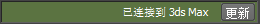

可以将各种 3D 数据（如动画、几何体、材质和纹理）从 Maya 发送到 3ds Max。然后，可以在 3ds Max 中对对象进行更改，再使用 3ds Max 应用程序按钮 >“发送到”(Send to)菜单中的“发送到 Maya”(Send to Maya)命令将其发送回 Maya。
将对象发送到 3ds Max
在 3ds Max 中打开新场景，并从 Maya 发送选定对象。
只有正在运行 3ds Max 时才可以使用。通过发送当前 Maya 选择来更新 3ds Max 场景。如果未选择任何对象，则此选项将发送先前发送的选择。
只有正在运行 3ds Max 时才可以使用。将当前选择发送到 3ds Max。将已发送的全部选定对象都复制至 3ds Max 场景。
